Note
Go to the end to download the full example code.
Analysing Magnetic Materials using STEM-DPC#
This tutorial shows how to use pyxem to analyse 4D-STEM data from magnetic materials using differential phase contrast (DPC). For more information about this imaging method, see the Wikipedia article on Scanning Transmission Electron Microscopy, which has a subsection on DPC.
The data is from the paper Strain Anisotropy and Magnetic Domains in Embedded Nanomagnets, recorded on a Merlin fast pixelated detector with the objective lens turned off. This allows magnetic information to be extracted by carefully mapping the beam shifts.
More documentation about pyxem is found at https://pyxem.readthedocs.io/
Journal article:
Strain Anisotropy and Magnetic Domains in Embedded Nanomagnets
Nord, M., Semisalova, A., Kákay, A., Hlawacek, G., MacLaren, I., Liersch, V., Volkov, O. M., Makarov, D., Paterson, G. W., Potzger, K., Lindner, J., Fassbender, J., McGrouther, D., Bali, R.
Small 2019, 15, 1904738. https://doi.org/10.1002/smll.201904738
The full dataset and scripts are available at Zenodo: https://zenodo.org/record/3466591
This tutorial uses a cropped version of the data containing only the information about the zero beam.
import hyperspy.api as hs
import pyxem as pxm
# Load the data
# The data is available at https://zenodo.org/record/3466591
# Or using pyxem's data module
s = pxm.data.feal_stripes(allow_download=True, lazy=True) # lazy loading using dask
s
0%| | 0.00/382M [00:00<?, ?B/s]
0%| | 4.10k/382M [00:00<3:29:37, 30.4kB/s]
0%| | 32.8k/382M [00:00<57:49, 110kB/s]
0%| | 172k/382M [00:00<15:30, 410kB/s]
0%| | 287k/382M [00:00<13:03, 487kB/s]
0%| | 471k/382M [00:00<07:54, 805kB/s]
0%| | 684k/382M [00:01<06:53, 923kB/s]
0%| | 881k/382M [00:01<06:39, 955kB/s]
0%| | 1.09M/382M [00:01<06:19, 1.01MB/s]
0%|▏ | 1.35M/382M [00:01<05:42, 1.11MB/s]
0%|▏ | 1.63M/382M [00:01<05:12, 1.22MB/s]
0%|▏ | 1.88M/382M [00:01<05:08, 1.23MB/s]
1%|▏ | 2.25M/382M [00:02<04:20, 1.46MB/s]
1%|▎ | 2.79M/382M [00:02<03:22, 1.87MB/s]
1%|▎ | 3.41M/382M [00:02<02:46, 2.28MB/s]
1%|▍ | 4.23M/382M [00:02<01:52, 3.36MB/s]
1%|▌ | 5.30M/382M [00:02<01:31, 4.13MB/s]
2%|▋ | 7.02M/382M [00:02<00:55, 6.77MB/s]
2%|▉ | 9.03M/382M [00:03<00:45, 8.14MB/s]
3%|█▏ | 11.5M/382M [00:03<00:31, 11.7MB/s]
4%|█▍ | 14.2M/382M [00:03<00:24, 15.3MB/s]
4%|█▋ | 16.9M/382M [00:03<00:20, 18.0MB/s]
5%|█▉ | 18.9M/382M [00:03<00:29, 12.5MB/s]
5%|██ | 20.6M/382M [00:03<00:32, 11.2MB/s]
6%|██▏ | 22.0M/382M [00:04<00:36, 9.93MB/s]
6%|██▎ | 23.2M/382M [00:04<00:43, 8.25MB/s]
6%|██▍ | 24.2M/382M [00:04<00:48, 7.31MB/s]
7%|██▍ | 25.0M/382M [00:04<00:48, 7.42MB/s]
7%|██▌ | 25.8M/382M [00:04<00:55, 6.40MB/s]
7%|██▋ | 26.9M/382M [00:04<00:49, 7.21MB/s]
7%|██▊ | 27.7M/382M [00:05<00:55, 6.38MB/s]
8%|███ | 31.0M/382M [00:05<00:29, 11.8MB/s]
9%|███▍ | 35.0M/382M [00:05<00:18, 18.3MB/s]
10%|███▉ | 39.1M/382M [00:05<00:14, 23.7MB/s]
11%|████▎ | 43.2M/382M [00:05<00:12, 28.0MB/s]
12%|████▋ | 47.3M/382M [00:05<00:10, 31.0MB/s]
13%|█████ | 51.4M/382M [00:05<00:10, 32.7MB/s]
14%|█████▍ | 54.8M/382M [00:05<00:09, 33.0MB/s]
15%|█████▊ | 58.5M/382M [00:05<00:09, 34.0MB/s]
16%|██████▏ | 62.3M/382M [00:06<00:09, 34.7MB/s]
17%|██████▌ | 66.3M/382M [00:06<00:08, 36.1MB/s]
18%|██████▉ | 70.0M/382M [00:07<00:28, 11.0MB/s]
19%|███████▏ | 72.6M/382M [00:07<00:37, 8.19MB/s]
20%|███████▍ | 74.7M/382M [00:08<00:44, 6.84MB/s]
20%|███████▌ | 76.2M/382M [00:08<00:47, 6.50MB/s]
20%|███████▋ | 77.4M/382M [00:08<00:51, 5.96MB/s]
21%|███████▊ | 78.4M/382M [00:08<00:52, 5.80MB/s]
21%|███████▉ | 79.3M/382M [00:09<00:54, 5.51MB/s]
21%|███████▉ | 80.0M/382M [00:09<00:58, 5.19MB/s]
21%|████████ | 80.6M/382M [00:09<00:57, 5.28MB/s]
21%|████████ | 81.2M/382M [00:09<01:02, 4.78MB/s]
21%|████████▏ | 81.8M/382M [00:09<01:03, 4.73MB/s]
22%|████████▏ | 82.3M/382M [00:09<01:02, 4.76MB/s]
22%|████████▏ | 82.8M/382M [00:09<01:13, 4.06MB/s]
22%|████████▎ | 83.5M/382M [00:10<01:16, 3.89MB/s]
22%|████████▎ | 83.9M/382M [00:10<01:17, 3.85MB/s]
22%|████████▍ | 84.9M/382M [00:10<01:10, 4.24MB/s]
22%|████████▌ | 85.8M/382M [00:10<01:07, 4.40MB/s]
23%|████████▌ | 86.5M/382M [00:10<01:00, 4.90MB/s]
23%|████████▋ | 87.2M/382M [00:10<01:05, 4.48MB/s]
23%|████████▋ | 87.9M/382M [00:11<01:00, 4.90MB/s]
23%|████████▊ | 88.6M/382M [00:11<01:05, 4.45MB/s]
23%|████████▉ | 89.3M/382M [00:11<00:59, 4.91MB/s]
24%|████████▉ | 89.9M/382M [00:11<01:05, 4.46MB/s]
24%|█████████ | 90.6M/382M [00:11<00:59, 4.93MB/s]
24%|█████████ | 91.3M/382M [00:11<01:06, 4.39MB/s]
24%|█████████▏ | 92.0M/382M [00:11<00:58, 4.93MB/s]
24%|█████████▏ | 92.5M/382M [00:12<00:57, 5.04MB/s]
24%|█████████▎ | 93.1M/382M [00:12<01:07, 4.26MB/s]
25%|█████████▎ | 94.0M/382M [00:12<01:05, 4.41MB/s]
25%|█████████▍ | 94.7M/382M [00:12<00:57, 5.02MB/s]
25%|█████████▍ | 95.3M/382M [00:12<00:56, 5.05MB/s]
25%|█████████▌ | 95.8M/382M [00:12<01:10, 4.08MB/s]
25%|█████████▌ | 96.4M/382M [00:12<01:04, 4.43MB/s]
25%|█████████▋ | 97.0M/382M [00:13<01:10, 4.04MB/s]
26%|█████████▋ | 97.8M/382M [00:13<01:11, 3.99MB/s]
26%|█████████▊ | 98.7M/382M [00:13<01:07, 4.21MB/s]
26%|█████████▉ | 99.6M/382M [00:13<01:05, 4.33MB/s]
26%|██████████▎ | 100M/382M [00:13<01:03, 4.45MB/s]
27%|██████████▎ | 101M/382M [00:14<01:01, 4.57MB/s]
27%|██████████▍ | 102M/382M [00:14<00:56, 4.98MB/s]
27%|██████████▍ | 103M/382M [00:14<00:55, 5.04MB/s]
27%|██████████▌ | 103M/382M [00:14<01:05, 4.28MB/s]
27%|██████████▌ | 104M/382M [00:14<00:57, 4.84MB/s]
27%|██████████▋ | 105M/382M [00:14<01:03, 4.35MB/s]
27%|██████████▋ | 105M/382M [00:14<01:04, 4.27MB/s]
28%|██████████▊ | 106M/382M [00:14<01:03, 4.38MB/s]
28%|██████████▊ | 106M/382M [00:15<01:09, 3.99MB/s]
28%|██████████▉ | 107M/382M [00:15<01:01, 4.47MB/s]
28%|██████████▉ | 107M/382M [00:15<01:04, 4.24MB/s]
28%|███████████ | 108M/382M [00:15<00:58, 4.71MB/s]
28%|███████████ | 109M/382M [00:15<01:04, 4.21MB/s]
29%|███████████▏ | 110M/382M [00:15<01:06, 4.09MB/s]
29%|███████████▎ | 110M/382M [00:16<01:06, 4.11MB/s]
29%|███████████▎ | 111M/382M [00:16<01:02, 4.35MB/s]
29%|███████████▍ | 112M/382M [00:16<01:00, 4.47MB/s]
30%|███████████▌ | 113M/382M [00:16<01:02, 4.32MB/s]
30%|███████████▌ | 114M/382M [00:16<01:00, 4.44MB/s]
30%|███████████▋ | 115M/382M [00:17<01:01, 4.35MB/s]
30%|███████████▊ | 115M/382M [00:17<01:51, 2.39MB/s]
30%|███████████▊ | 116M/382M [00:17<01:27, 3.05MB/s]
30%|███████████▉ | 117M/382M [00:17<01:29, 2.97MB/s]
31%|███████████▉ | 117M/382M [00:18<01:22, 3.22MB/s]
31%|████████████ | 118M/382M [00:18<01:10, 3.73MB/s]
31%|████████████ | 119M/382M [00:18<01:00, 4.32MB/s]
31%|████████████▏ | 119M/382M [00:18<01:05, 4.04MB/s]
31%|████████████▏ | 120M/382M [00:18<00:56, 4.64MB/s]
32%|████████████▎ | 121M/382M [00:18<01:02, 4.21MB/s]
32%|████████████▍ | 121M/382M [00:19<01:05, 4.01MB/s]
32%|████████████▍ | 122M/382M [00:19<01:02, 4.16MB/s]
32%|████████████▌ | 122M/382M [00:19<01:06, 3.89MB/s]
32%|████████████▌ | 123M/382M [00:19<00:58, 4.42MB/s]
32%|████████████▋ | 124M/382M [00:19<01:05, 3.94MB/s]
32%|████████████▋ | 124M/382M [00:19<01:05, 3.96MB/s]
33%|████████████▋ | 125M/382M [00:19<01:09, 3.68MB/s]
33%|████████████▊ | 126M/382M [00:20<00:55, 4.63MB/s]
33%|████████████▉ | 126M/382M [00:20<01:03, 4.06MB/s]
33%|████████████▉ | 127M/382M [00:20<00:59, 4.31MB/s]
33%|█████████████ | 128M/382M [00:20<00:55, 4.63MB/s]
34%|█████████████ | 128M/382M [00:20<00:58, 4.37MB/s]
34%|█████████████▏ | 129M/382M [00:20<00:59, 4.27MB/s]
34%|█████████████▎ | 130M/382M [00:21<00:56, 4.45MB/s]
34%|█████████████▍ | 131M/382M [00:21<00:55, 4.51MB/s]
35%|█████████████▍ | 132M/382M [00:21<00:55, 4.48MB/s]
35%|█████████████▌ | 132M/382M [00:21<00:56, 4.38MB/s]
35%|█████████████▌ | 133M/382M [00:21<00:53, 4.62MB/s]
35%|█████████████▌ | 133M/382M [00:21<00:57, 4.35MB/s]
35%|█████████████▋ | 134M/382M [00:22<01:06, 3.75MB/s]
35%|█████████████▋ | 135M/382M [00:22<00:56, 4.40MB/s]
35%|█████████████▊ | 135M/382M [00:22<01:00, 4.09MB/s]
36%|█████████████▊ | 136M/382M [00:22<00:54, 4.55MB/s]
36%|█████████████▉ | 136M/382M [00:22<00:53, 4.62MB/s]
36%|█████████████▉ | 137M/382M [00:22<01:01, 4.01MB/s]
36%|██████████████ | 138M/382M [00:22<00:51, 4.71MB/s]
36%|██████████████ | 138M/382M [00:23<00:58, 4.14MB/s]
36%|██████████████▏ | 139M/382M [00:23<00:50, 4.84MB/s]
37%|██████████████▏ | 140M/382M [00:23<00:59, 4.07MB/s]
37%|██████████████▎ | 141M/382M [00:23<00:56, 4.28MB/s]
37%|██████████████▍ | 141M/382M [00:23<00:54, 4.40MB/s]
37%|██████████████▌ | 142M/382M [00:23<00:52, 4.53MB/s]
37%|██████████████▌ | 143M/382M [00:24<00:51, 4.62MB/s]
38%|██████████████▋ | 144M/382M [00:24<00:47, 5.03MB/s]
38%|██████████████▊ | 145M/382M [00:24<00:52, 4.52MB/s]
38%|██████████████▊ | 145M/382M [00:24<00:52, 4.52MB/s]
38%|██████████████▊ | 146M/382M [00:24<00:51, 4.60MB/s]
38%|██████████████▉ | 146M/382M [00:24<01:01, 3.84MB/s]
38%|██████████████▉ | 147M/382M [00:24<00:57, 4.12MB/s]
39%|███████████████ | 148M/382M [00:25<00:56, 4.17MB/s]
39%|███████████████▏ | 148M/382M [00:25<00:54, 4.32MB/s]
39%|███████████████▏ | 149M/382M [00:25<00:55, 4.17MB/s]
39%|███████████████▎ | 150M/382M [00:25<00:57, 4.06MB/s]
39%|███████████████▍ | 151M/382M [00:25<00:53, 4.33MB/s]
40%|███████████████▍ | 152M/382M [00:26<00:52, 4.38MB/s]
40%|███████████████▌ | 153M/382M [00:26<00:50, 4.54MB/s]
40%|███████████████▋ | 153M/382M [00:26<00:45, 5.00MB/s]
40%|███████████████▋ | 154M/382M [00:26<00:52, 4.38MB/s]
40%|███████████████▊ | 155M/382M [00:26<00:53, 4.22MB/s]
41%|███████████████▊ | 156M/382M [00:26<00:51, 4.41MB/s]
41%|███████████████▉ | 156M/382M [00:27<00:51, 4.40MB/s]
41%|████████████████ | 157M/382M [00:27<00:49, 4.53MB/s]
41%|████████████████▏ | 158M/382M [00:27<00:48, 4.59MB/s]
42%|████████████████▏ | 159M/382M [00:27<00:47, 4.67MB/s]
42%|████████████████▎ | 160M/382M [00:27<00:42, 5.24MB/s]
42%|████████████████▍ | 161M/382M [00:27<00:43, 5.06MB/s]
42%|████████████████▍ | 161M/382M [00:28<00:50, 4.37MB/s]
42%|████████████████▍ | 162M/382M [00:28<00:48, 4.54MB/s]
42%|████████████████▌ | 162M/382M [00:28<00:54, 4.06MB/s]
43%|████████████████▋ | 163M/382M [00:28<00:43, 5.06MB/s]
43%|████████████████▋ | 164M/382M [00:28<00:50, 4.30MB/s]
43%|████████████████▊ | 164M/382M [00:28<00:44, 4.94MB/s]
43%|████████████████▊ | 165M/382M [00:28<00:51, 4.19MB/s]
43%|████████████████▉ | 166M/382M [00:29<00:50, 4.28MB/s]
44%|█████████████████ | 167M/382M [00:29<00:43, 4.97MB/s]
44%|█████████████████ | 167M/382M [00:29<00:49, 4.35MB/s]
44%|█████████████████▏ | 168M/382M [00:29<00:47, 4.50MB/s]
44%|█████████████████▎ | 169M/382M [00:29<00:47, 4.52MB/s]
44%|█████████████████▎ | 170M/382M [00:30<00:45, 4.66MB/s]
45%|█████████████████▍ | 171M/382M [00:30<00:45, 4.69MB/s]
45%|█████████████████▌ | 172M/382M [00:30<00:46, 4.51MB/s]
45%|█████████████████▌ | 173M/382M [00:30<00:47, 4.43MB/s]
45%|█████████████████▋ | 173M/382M [00:30<00:46, 4.45MB/s]
46%|█████████████████▊ | 174M/382M [00:31<00:45, 4.56MB/s]
46%|█████████████████▉ | 175M/382M [00:31<00:46, 4.48MB/s]
46%|█████████████████▉ | 176M/382M [00:31<01:15, 2.72MB/s]
46%|█████████████████▉ | 176M/382M [00:31<01:09, 2.96MB/s]
46%|██████████████████ | 177M/382M [00:31<00:57, 3.57MB/s]
47%|██████████████████▏ | 178M/382M [00:32<00:58, 3.52MB/s]
47%|██████████████████▏ | 179M/382M [00:32<00:55, 3.70MB/s]
47%|██████████████████▎ | 179M/382M [00:32<00:49, 4.05MB/s]
47%|██████████████████▍ | 180M/382M [00:32<00:46, 4.30MB/s]
47%|██████████████████▌ | 181M/382M [00:32<00:39, 5.12MB/s]
48%|██████████████████▌ | 182M/382M [00:33<00:45, 4.45MB/s]
48%|██████████████████▋ | 183M/382M [00:33<00:47, 4.17MB/s]
48%|██████████████████▋ | 184M/382M [00:33<00:44, 4.43MB/s]
48%|██████████████████▊ | 184M/382M [00:33<00:45, 4.31MB/s]
48%|██████████████████▉ | 185M/382M [00:33<00:41, 4.75MB/s]
49%|██████████████████▉ | 186M/382M [00:33<00:45, 4.29MB/s]
49%|███████████████████ | 186M/382M [00:33<00:40, 4.84MB/s]
49%|███████████████████ | 187M/382M [00:34<00:43, 4.51MB/s]
49%|███████████████████ | 187M/382M [00:34<00:47, 4.06MB/s]
49%|███████████████████▏ | 188M/382M [00:34<00:47, 4.06MB/s]
49%|███████████████████▏ | 189M/382M [00:34<00:48, 3.97MB/s]
50%|███████████████████▍ | 191M/382M [00:34<00:25, 7.44MB/s]
51%|███████████████████▊ | 195M/382M [00:34<00:13, 14.4MB/s]
52%|████████████████████▎ | 199M/382M [00:34<00:08, 20.8MB/s]
53%|████████████████████▋ | 202M/382M [00:35<00:07, 24.7MB/s]
54%|████████████████████▉ | 206M/382M [00:35<00:06, 27.0MB/s]
55%|█████████████████████▍ | 210M/382M [00:35<00:05, 31.3MB/s]
56%|█████████████████████▊ | 213M/382M [00:35<00:05, 32.0MB/s]
57%|██████████████████████▏ | 217M/382M [00:35<00:04, 34.0MB/s]
58%|██████████████████████▌ | 221M/382M [00:35<00:04, 34.9MB/s]
59%|██████████████████████▉ | 225M/382M [00:35<00:08, 18.2MB/s]
60%|███████████████████████▏ | 228M/382M [00:36<00:16, 9.59MB/s]
60%|███████████████████████▍ | 230M/382M [00:37<00:18, 8.14MB/s]
61%|███████████████████████▊ | 233M/382M [00:37<00:13, 10.9MB/s]
62%|████████████████████████▏ | 237M/382M [00:37<00:09, 14.8MB/s]
63%|████████████████████████▌ | 241M/382M [00:37<00:07, 18.6MB/s]
64%|█████████████████████████ | 245M/382M [00:37<00:06, 22.6MB/s]
65%|█████████████████████████▍ | 249M/382M [00:37<00:05, 24.6MB/s]
66%|█████████████████████████▊ | 253M/382M [00:37<00:04, 27.9MB/s]
67%|██████████████████████████▏ | 256M/382M [00:37<00:04, 29.8MB/s]
68%|██████████████████████████▌ | 260M/382M [00:37<00:03, 32.3MB/s]
69%|██████████████████████████▉ | 264M/382M [00:38<00:07, 15.8MB/s]
70%|███████████████████████████▏ | 267M/382M [00:38<00:11, 10.2MB/s]
70%|███████████████████████████▍ | 269M/382M [00:39<00:14, 7.94MB/s]
71%|███████████████████████████▌ | 270M/382M [00:39<00:15, 7.01MB/s]
71%|███████████████████████████▋ | 272M/382M [00:40<00:16, 6.57MB/s]
71%|███████████████████████████▊ | 273M/382M [00:40<00:18, 6.05MB/s]
72%|███████████████████████████▉ | 273M/382M [00:40<00:18, 5.98MB/s]
72%|███████████████████████████▉ | 274M/382M [00:40<00:19, 5.49MB/s]
72%|████████████████████████████ | 275M/382M [00:40<00:20, 5.32MB/s]
72%|████████████████████████████▏ | 276M/382M [00:40<00:20, 5.22MB/s]
72%|████████████████████████████▏ | 276M/382M [00:41<00:20, 5.12MB/s]
72%|████████████████████████████▎ | 277M/382M [00:41<00:21, 4.95MB/s]
73%|████████████████████████████▎ | 278M/382M [00:41<00:21, 4.94MB/s]
73%|████████████████████████████▍ | 278M/382M [00:41<00:24, 4.25MB/s]
73%|████████████████████████████▍ | 279M/382M [00:41<00:28, 3.70MB/s]
73%|████████████████████████████▍ | 279M/382M [00:41<00:27, 3.80MB/s]
73%|████████████████████████████▌ | 279M/382M [00:41<00:27, 3.76MB/s]
73%|████████████████████████████▌ | 280M/382M [00:42<00:25, 3.98MB/s]
73%|████████████████████████████▋ | 281M/382M [00:42<00:26, 3.87MB/s]
74%|████████████████████████████▋ | 281M/382M [00:42<00:22, 4.51MB/s]
74%|████████████████████████████▊ | 282M/382M [00:42<00:21, 4.64MB/s]
74%|████████████████████████████▊ | 282M/382M [00:42<00:25, 3.96MB/s]
74%|████████████████████████████▉ | 283M/382M [00:42<00:21, 4.60MB/s]
74%|████████████████████████████▉ | 284M/382M [00:42<00:22, 4.32MB/s]
74%|█████████████████████████████ | 284M/382M [00:43<00:20, 4.81MB/s]
75%|█████████████████████████████ | 285M/382M [00:43<00:21, 4.60MB/s]
75%|█████████████████████████████▏ | 286M/382M [00:43<00:20, 4.64MB/s]
75%|█████████████████████████████▎ | 287M/382M [00:43<00:20, 4.65MB/s]
75%|█████████████████████████████▍ | 288M/382M [00:43<00:19, 4.76MB/s]
76%|█████████████████████████████▍ | 289M/382M [00:43<00:19, 4.72MB/s]
76%|█████████████████████████████▌ | 290M/382M [00:44<00:19, 4.76MB/s]
76%|█████████████████████████████▋ | 291M/382M [00:44<00:19, 4.73MB/s]
76%|█████████████████████████████▊ | 292M/382M [00:44<00:18, 4.93MB/s]
76%|█████████████████████████████▊ | 292M/382M [00:44<00:19, 4.68MB/s]
77%|█████████████████████████████▉ | 293M/382M [00:44<00:18, 4.87MB/s]
77%|█████████████████████████████▉ | 294M/382M [00:44<00:19, 4.55MB/s]
77%|██████████████████████████████ | 294M/382M [00:45<00:18, 4.86MB/s]
77%|██████████████████████████████ | 295M/382M [00:45<00:16, 5.17MB/s]
77%|██████████████████████████████▏ | 295M/382M [00:45<00:19, 4.46MB/s]
78%|██████████████████████████████▏ | 296M/382M [00:45<00:18, 4.61MB/s]
78%|██████████████████████████████▎ | 297M/382M [00:45<00:15, 5.49MB/s]
78%|██████████████████████████████▍ | 298M/382M [00:45<00:18, 4.65MB/s]
78%|██████████████████████████████▍ | 299M/382M [00:46<00:18, 4.43MB/s]
78%|██████████████████████████████▌ | 299M/382M [00:46<00:19, 4.34MB/s]
79%|██████████████████████████████▋ | 300M/382M [00:46<00:18, 4.46MB/s]
79%|██████████████████████████████▋ | 301M/382M [00:46<00:16, 4.92MB/s]
79%|██████████████████████████████▊ | 302M/382M [00:46<00:19, 4.11MB/s]
79%|██████████████████████████████▊ | 302M/382M [00:46<00:18, 4.23MB/s]
79%|██████████████████████████████▊ | 303M/382M [00:47<00:21, 3.67MB/s]
79%|██████████████████████████████▉ | 303M/382M [00:47<00:22, 3.59MB/s]
79%|██████████████████████████████▉ | 304M/382M [00:47<00:18, 4.22MB/s]
80%|███████████████████████████████ | 304M/382M [00:47<00:19, 4.07MB/s]
80%|███████████████████████████████ | 304M/382M [00:47<00:18, 4.12MB/s]
80%|███████████████████████████████ | 305M/382M [00:47<00:18, 4.16MB/s]
80%|███████████████████████████████▏ | 305M/382M [00:47<00:17, 4.38MB/s]
80%|███████████████████████████████▏ | 306M/382M [00:47<00:18, 4.06MB/s]
80%|███████████████████████████████▎ | 307M/382M [00:47<00:15, 4.75MB/s]
80%|███████████████████████████████▎ | 307M/382M [00:48<00:15, 4.83MB/s]
81%|███████████████████████████████▍ | 308M/382M [00:48<00:17, 4.29MB/s]
81%|███████████████████████████████▌ | 309M/382M [00:48<00:14, 5.07MB/s]
81%|███████████████████████████████▌ | 309M/382M [00:48<00:16, 4.40MB/s]
81%|███████████████████████████████▋ | 310M/382M [00:48<00:14, 4.95MB/s]
81%|███████████████████████████████▋ | 311M/382M [00:48<00:16, 4.34MB/s]
82%|███████████████████████████████▊ | 312M/382M [00:49<00:16, 4.28MB/s]
82%|███████████████████████████████▉ | 312M/382M [00:49<00:15, 4.45MB/s]
82%|███████████████████████████████▉ | 313M/382M [00:49<00:15, 4.52MB/s]
82%|████████████████████████████████ | 314M/382M [00:49<00:14, 4.66MB/s]
82%|████████████████████████████████▏ | 315M/382M [00:49<00:14, 4.75MB/s]
83%|████████████████████████████████▎ | 316M/382M [00:49<00:12, 5.42MB/s]
83%|████████████████████████████████▎ | 317M/382M [00:50<00:14, 4.61MB/s]
83%|████████████████████████████████▍ | 317M/382M [00:50<00:14, 4.36MB/s]
83%|████████████████████████████████▍ | 318M/382M [00:50<00:14, 4.31MB/s]
83%|████████████████████████████████▍ | 318M/382M [00:50<00:13, 4.59MB/s]
83%|████████████████████████████████▌ | 319M/382M [00:50<00:15, 4.12MB/s]
84%|████████████████████████████████▋ | 320M/382M [00:50<00:14, 4.16MB/s]
84%|████████████████████████████████▋ | 321M/382M [00:51<00:13, 4.38MB/s]
84%|████████████████████████████████▊ | 322M/382M [00:51<00:13, 4.55MB/s]
84%|████████████████████████████████▉ | 323M/382M [00:51<00:12, 4.61MB/s]
85%|█████████████████████████████████ | 324M/382M [00:51<00:12, 4.59MB/s]
85%|█████████████████████████████████ | 324M/382M [00:51<00:12, 4.66MB/s]
85%|█████████████████████████████████▏ | 325M/382M [00:52<00:12, 4.71MB/s]
85%|█████████████████████████████████▎ | 326M/382M [00:52<00:12, 4.51MB/s]
86%|█████████████████████████████████▍ | 327M/382M [00:52<00:11, 4.68MB/s]
86%|█████████████████████████████████▍ | 328M/382M [00:52<00:11, 4.75MB/s]
86%|█████████████████████████████████▌ | 329M/382M [00:52<00:11, 4.72MB/s]
86%|█████████████████████████████████▋ | 330M/382M [00:52<00:09, 5.26MB/s]
86%|█████████████████████████████████▋ | 330M/382M [00:53<00:11, 4.60MB/s]
87%|█████████████████████████████████▊ | 331M/382M [00:53<00:09, 5.12MB/s]
87%|█████████████████████████████████▊ | 332M/382M [00:53<00:11, 4.36MB/s]
87%|█████████████████████████████████▉ | 333M/382M [00:53<00:11, 4.35MB/s]
87%|██████████████████████████████████ | 334M/382M [00:53<00:10, 4.56MB/s]
88%|██████████████████████████████████▏ | 334M/382M [00:53<00:10, 4.66MB/s]
88%|██████████████████████████████████▏ | 335M/382M [00:54<00:09, 4.79MB/s]
88%|██████████████████████████████████▎ | 336M/382M [00:54<00:09, 4.70MB/s]
88%|██████████████████████████████████▎ | 337M/382M [00:54<00:10, 4.49MB/s]
88%|██████████████████████████████████▍ | 338M/382M [00:54<00:09, 4.46MB/s]
89%|██████████████████████████████████▌ | 338M/382M [00:54<00:09, 4.61MB/s]
89%|██████████████████████████████████▋ | 339M/382M [00:55<00:09, 4.72MB/s]
89%|██████████████████████████████████▋ | 340M/382M [00:55<00:08, 5.14MB/s]
89%|██████████████████████████████████▊ | 341M/382M [00:55<00:08, 4.66MB/s]
89%|██████████████████████████████████▉ | 342M/382M [00:55<00:08, 4.66MB/s]
90%|██████████████████████████████████▉ | 343M/382M [00:55<00:08, 4.76MB/s]
90%|███████████████████████████████████ | 343M/382M [00:55<00:08, 4.73MB/s]
90%|███████████████████████████████████ | 344M/382M [00:55<00:08, 4.63MB/s]
90%|███████████████████████████████████▏ | 344M/382M [00:56<00:07, 4.85MB/s]
90%|███████████████████████████████████▏ | 345M/382M [00:56<00:08, 4.48MB/s]
90%|███████████████████████████████████▎ | 346M/382M [00:56<00:07, 4.89MB/s]
91%|███████████████████████████████████▎ | 346M/382M [00:56<00:07, 4.56MB/s]
91%|███████████████████████████████████▍ | 347M/382M [00:56<00:07, 4.97MB/s]
91%|███████████████████████████████████▍ | 348M/382M [00:56<00:07, 4.51MB/s]
91%|███████████████████████████████████▌ | 348M/382M [00:56<00:06, 5.06MB/s]
91%|███████████████████████████████████▋ | 349M/382M [00:57<00:07, 4.56MB/s]
92%|███████████████████████████████████▋ | 350M/382M [00:57<00:06, 5.02MB/s]
92%|███████████████████████████████████▊ | 351M/382M [00:57<00:06, 4.60MB/s]
92%|███████████████████████████████████▊ | 351M/382M [00:57<00:06, 4.88MB/s]
92%|███████████████████████████████████▉ | 352M/382M [00:57<00:07, 4.15MB/s]
92%|███████████████████████████████████▉ | 352M/382M [00:57<00:07, 4.01MB/s]
92%|████████████████████████████████████ | 353M/382M [00:57<00:06, 4.31MB/s]
93%|████████████████████████████████████ | 354M/382M [00:58<00:06, 4.27MB/s]
93%|████████████████████████████████████▏ | 354M/382M [00:58<00:06, 4.08MB/s]
93%|████████████████████████████████████▏ | 355M/382M [00:58<00:06, 4.28MB/s]
93%|████████████████████████████████████▏ | 355M/382M [00:58<00:06, 4.08MB/s]
93%|████████████████████████████████████▎ | 355M/382M [00:58<00:06, 4.16MB/s]
93%|████████████████████████████████████▎ | 356M/382M [00:58<00:06, 3.73MB/s]
93%|████████████████████████████████████▍ | 357M/382M [00:58<00:05, 4.44MB/s]
94%|████████████████████████████████████▍ | 357M/382M [00:59<00:06, 4.11MB/s]
94%|████████████████████████████████████▌ | 358M/382M [00:59<00:05, 4.56MB/s]
94%|████████████████████████████████████▌ | 359M/382M [00:59<00:05, 4.19MB/s]
94%|████████████████████████████████████▋ | 359M/382M [00:59<00:04, 4.88MB/s]
94%|████████████████████████████████████▊ | 360M/382M [00:59<00:05, 4.38MB/s]
94%|████████████████████████████████████▊ | 361M/382M [00:59<00:04, 5.02MB/s]
95%|████████████████████████████████████▉ | 362M/382M [00:59<00:04, 4.57MB/s]
95%|████████████████████████████████████▉ | 362M/382M [01:00<00:03, 5.14MB/s]
95%|█████████████████████████████████████ | 363M/382M [01:00<00:04, 4.64MB/s]
95%|█████████████████████████████████████ | 364M/382M [01:00<00:03, 5.06MB/s]
95%|█████████████████████████████████████▏ | 364M/382M [01:00<00:03, 5.28MB/s]
95%|█████████████████████████████████████▏ | 365M/382M [01:00<00:03, 4.40MB/s]
96%|█████████████████████████████████████▎ | 366M/382M [01:00<00:04, 4.13MB/s]
96%|█████████████████████████████████████▎ | 366M/382M [01:01<00:07, 2.15MB/s]
96%|█████████████████████████████████████▍ | 366M/382M [01:01<00:06, 2.47MB/s]
96%|█████████████████████████████████████▍ | 367M/382M [01:01<00:05, 2.95MB/s]
96%|█████████████████████████████████████▍ | 367M/382M [01:01<00:04, 3.19MB/s]
96%|█████████████████████████████████████▌ | 368M/382M [01:01<00:04, 3.13MB/s]
96%|█████████████████████████████████████▋ | 369M/382M [01:01<00:03, 3.85MB/s]
97%|█████████████████████████████████████▋ | 369M/382M [01:02<00:03, 3.89MB/s]
97%|█████████████████████████████████████▊ | 370M/382M [01:02<00:02, 4.50MB/s]
97%|█████████████████████████████████████▊ | 371M/382M [01:02<00:02, 4.32MB/s]
97%|█████████████████████████████████████▉ | 371M/382M [01:02<00:02, 4.67MB/s]
97%|█████████████████████████████████████▉ | 372M/382M [01:02<00:01, 5.06MB/s]
98%|██████████████████████████████████████ | 373M/382M [01:02<00:02, 4.36MB/s]
98%|██████████████████████████████████████ | 373M/382M [01:02<00:01, 4.75MB/s]
98%|██████████████████████████████████████▏| 374M/382M [01:03<00:01, 4.43MB/s]
98%|██████████████████████████████████████▏| 375M/382M [01:03<00:01, 4.96MB/s]
98%|██████████████████████████████████████▎| 375M/382M [01:03<00:01, 4.36MB/s]
98%|██████████████████████████████████████▎| 376M/382M [01:03<00:01, 4.44MB/s]
98%|██████████████████████████████████████▍| 376M/382M [01:03<00:01, 3.72MB/s]
99%|██████████████████████████████████████▍| 377M/382M [01:03<00:01, 3.97MB/s]
99%|██████████████████████████████████████▌| 378M/382M [01:03<00:01, 4.18MB/s]
99%|██████████████████████████████████████▌| 378M/382M [01:04<00:00, 4.22MB/s]
99%|██████████████████████████████████████▋| 379M/382M [01:04<00:00, 4.60MB/s]
99%|██████████████████████████████████████▋| 379M/382M [01:04<00:00, 4.33MB/s]
99%|██████████████████████████████████████▊| 380M/382M [01:04<00:00, 3.85MB/s]
0%| | 0.00/382M [00:00<?, ?B/s]
100%|███████████████████████████████████████| 382M/382M [00:00<00:00, 1.59TB/s]
plot the data to visualise it
s.plot()
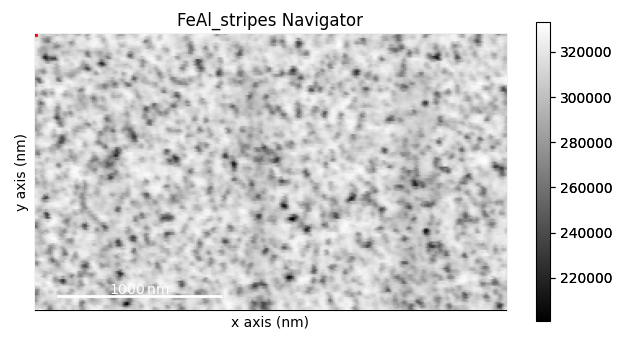
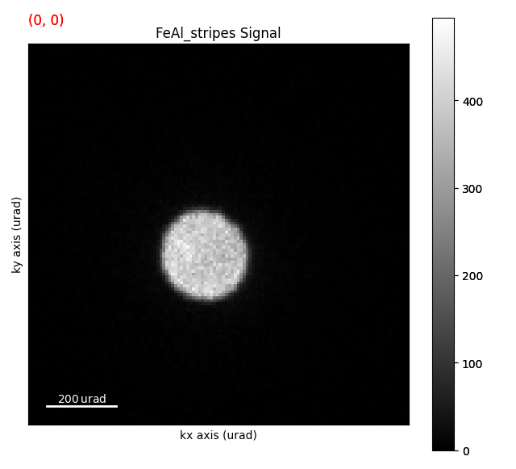
# This dataset is chunked into blocks of (16 x 16 x 16 x 16) hyperpixels (x, y, kx, ky)
# This means that we can create virtual images quite easily and quickly.
# For example:
s_nav = s.isig[32, 35].T
s_nav.plot()
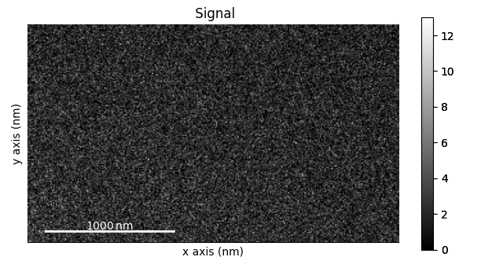
0%| | 0/2 [00:00<?, ?it/s]
100%|██████████| 2/2 [00:00<00:00, 57.69it/s]
We can use this as our navigation image:
s.plot(navigator=s_nav)
# Many Times the shifts are quite small so one thing we can do is transpose
# the data and then interactively shift around to visualize the shift.
# Try using Shift + Left Mouse Button to jump to the Edge of the Zero beam
# in the Transposed Image:
s_diff_nav = s.inav[10:20, 10:20].mean(axis=(0, 1))
s_diff_nav.plot()
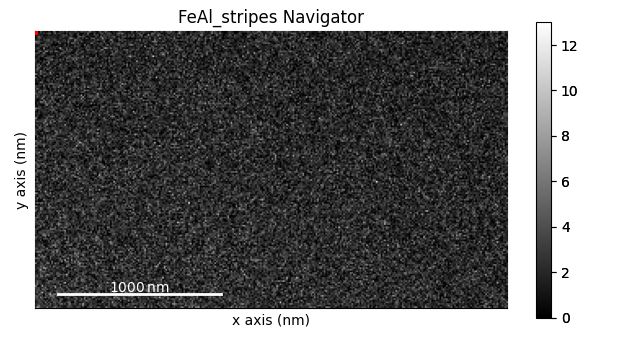

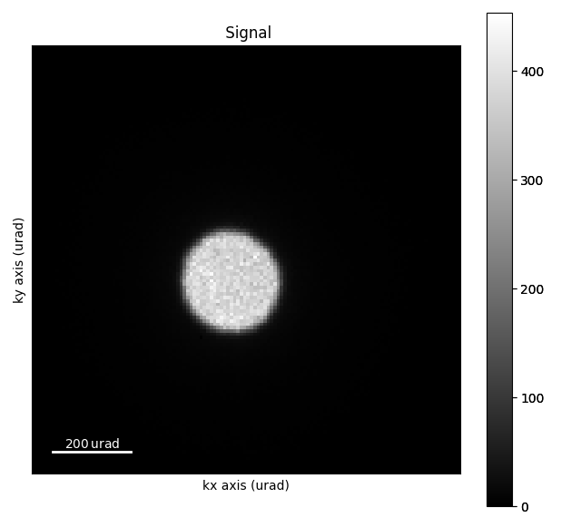
0%| | 0/2 [00:00<?, ?it/s]
100%|██████████| 2/2 [00:00<00:00, 57.40it/s]
s_transpose = s.transpose()
s_transpose.plot(navigator=s_diff_nav)
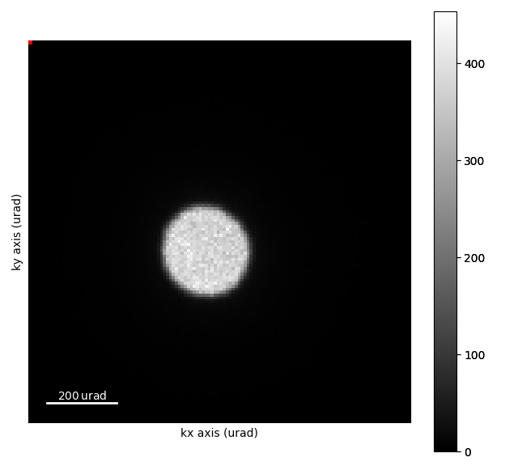
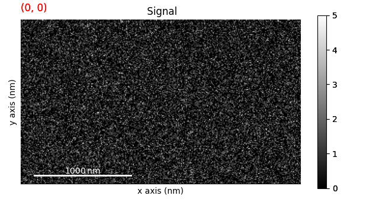
This visualizes the shift of the beam, which is caused by the beam passing through the ferromagnetic domains in the material. However, it is not very quantitative. So lets try to extract the beam shifts using center of mass.
# Extracting the Beam Shifts using Center of Mass
# -----------------------------------------------
com = s.get_direct_beam_position(
method="center_of_mass", half_square_width=40 # in pixels
)
com
This returns a BeamShift1D class, which will be explored more later. What we need to know is that is it basically a HyperSpy Signal1D class, where at each navigation pixel we have a 2D vector (kx, ky) of the beam shift.
# Plotting it shows the seperated x, and y components of the beam shift.
# You first need to compute it before you can plot it.
com.compute()
com.plot()
0%| | 0/181 [00:00<?, ?it/s]
1%| | 1/181 [00:00<00:25, 7.01it/s]
2%|▏ | 4/181 [00:00<00:12, 14.63it/s]
9%|▉ | 16/181 [00:00<00:05, 30.78it/s]
15%|█▌ | 28/181 [00:00<00:04, 37.38it/s]
19%|█▉ | 34/181 [00:01<00:04, 36.12it/s]
22%|██▏ | 40/181 [00:01<00:04, 31.33it/s]
24%|██▍ | 44/181 [00:01<00:04, 31.95it/s]
27%|██▋ | 48/181 [00:01<00:04, 31.67it/s]
29%|██▊ | 52/181 [00:01<00:04, 30.10it/s]
30%|███ | 55/181 [00:01<00:04, 29.79it/s]
34%|███▎ | 61/181 [00:02<00:04, 28.86it/s]
37%|███▋ | 67/181 [00:02<00:04, 27.39it/s]
39%|███▊ | 70/181 [00:02<00:04, 27.12it/s]
42%|████▏ | 76/181 [00:02<00:03, 27.53it/s]
44%|████▍ | 80/181 [00:02<00:03, 29.92it/s]
46%|████▋ | 84/181 [00:02<00:03, 26.99it/s]
50%|█████ | 91/181 [00:02<00:02, 35.79it/s]
53%|█████▎ | 96/181 [00:03<00:03, 25.62it/s]
59%|█████▊ | 106/181 [00:03<00:03, 24.66it/s]
65%|██████▌ | 118/181 [00:04<00:02, 28.83it/s]
69%|██████▊ | 124/181 [00:04<00:01, 29.43it/s]
72%|███████▏ | 130/181 [00:04<00:01, 26.65it/s]
75%|███████▌ | 136/181 [00:04<00:01, 29.39it/s]
78%|███████▊ | 142/181 [00:04<00:01, 25.53it/s]
85%|████████▌ | 154/181 [00:05<00:00, 27.60it/s]
87%|████████▋ | 157/181 [00:05<00:00, 26.70it/s]
93%|█████████▎| 169/181 [00:05<00:00, 26.53it/s]
100%|██████████| 181/181 [00:05<00:00, 30.19it/s]
[<Axes: title={'center': 'x-shift'}, xlabel='x axis (nm)', ylabel='y axis (nm)'>, <Axes: title={'center': 'y-shift'}, xlabel='x axis (nm)', ylabel='y axis (nm)'>]
Other Contrast:#
- However, we’re also getting contrast from the other effects, such as structural effects.
Since the sample is nanocrystalline, some of the grains will be close to some zone axis, giving heavy Bragg scattering. While the Bragg spots themselves won’t be visible at such low
scattering angles as we have in s_crop, it will still change the intensity distribution _within_ the direct beam. Essentially, the direct beam becomes non-uniform, which will have an effect similarly
to beam shift.
- One way of reducing this is by using thresholding and masking. However, we first need to find reasonable
values for these.
For this, we use threshold_and_mask on a subset of the dataset.
# threshold_and_mask is not supported for lazy signals; use a non-lazy copy
# so that the original lazy s remains unchanged for subsequent operations.
s_eager = s.copy()
s_eager.compute()
s_threshold_mask = s_eager.threshold_and_mask(
threshold=1,
mask=(64, 64, 46), # x # y # radius
)
s_threshold_mask.plot(navigator=s_nav)
# `threshold_and_mask` is a useful way to preprocess the data before extracting the beam shifts.
# It works by getting the mean of the intensity inside the masked area, times the threshold.
# Then, any pixel lower or equal than that value is set to zero, while any value above that
# value is set to one. Ideally, this should remove the influence of other diffraction effects,
# and non-uniform direct beam.
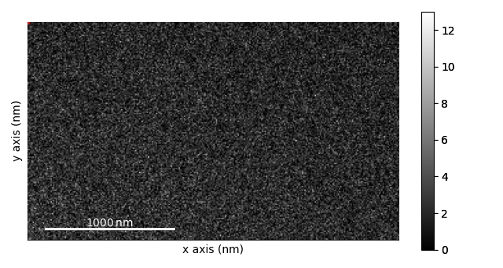
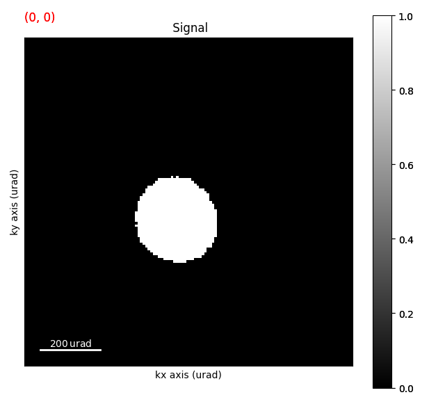
0%| | 0/61 [00:00<?, ?it/s]
15%|█▍ | 9/61 [00:00<00:00, 89.32it/s]
30%|██▉ | 18/61 [00:00<00:00, 80.88it/s]
44%|████▍ | 27/61 [00:00<00:00, 81.77it/s]
59%|█████▉ | 36/61 [00:00<00:00, 81.99it/s]
74%|███████▍ | 45/61 [00:00<00:00, 83.28it/s]
89%|████████▊ | 54/61 [00:00<00:00, 78.53it/s]
100%|██████████| 61/61 [00:00<00:00, 67.29it/s]
0%| | 0/51 [00:00<?, ?it/s]
2%|▏ | 1/51 [00:01<01:17, 1.54s/it]
18%|█▊ | 9/51 [00:03<00:12, 3.34it/s]
33%|███▎ | 17/51 [00:04<00:08, 4.19it/s]
49%|████▉ | 25/51 [00:06<00:05, 4.60it/s]
61%|██████ | 31/51 [00:06<00:03, 6.45it/s]
65%|██████▍ | 33/51 [00:07<00:04, 4.40it/s]
76%|███████▋ | 39/51 [00:07<00:01, 6.44it/s]
80%|████████ | 41/51 [00:09<00:02, 4.33it/s]
92%|█████████▏| 47/51 [00:09<00:00, 6.69it/s]
98%|█████████▊| 50/51 [00:09<00:00, 7.89it/s]
100%|██████████| 51/51 [00:09<00:00, 5.30it/s]
com_threshold = s_threshold_mask.get_direct_beam_position(
method="center_of_mass", half_square_width=40 # in pixels
)
# s_threshold_mask is already non-lazy, so com_threshold is too — no .compute() needed
com_threshold.plot()
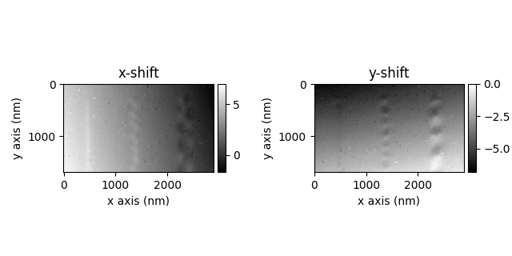
[<Axes: title={'center': 'x-shift'}, xlabel='x axis (nm)', ylabel='y axis (nm)'>, <Axes: title={'center': 'y-shift'}, xlabel='x axis (nm)', ylabel='y axis (nm)'>]
# Correcting the d-scan
# ---------------------
# With the beam shift extracted, we will remove the effects of impure beam shift (d-scan).
# This is due to various instrument misalignments, and leads to a change in beam position in
# the probe plane becoming a shift of the beam in the detector plane.
# Luckily, in most situations, the d-scan is linear across the dataset, meaning it can be removed
# using a simple plane subtraction.
plane = com_threshold.get_linear_plane()
plane.plot()
[<Axes: title={'center': 'x-shift'}, xlabel='x axis (nm)', ylabel='y axis (nm)'>, <Axes: title={'center': 'y-shift'}, xlabel='x axis (nm)', ylabel='y axis (nm)'>]
Visualising the Beam Shifts#
- Now we can visualize the signal as a magnitude and direction maps: get_color_signal,`get_magnitude_phase_signal`,
get_magnitude_signal
and get_color_image_with_indicator.
# The two former returns a HyperSpy signal, while the latter interfaces directly with the matplotlib
# backend making it more customizable.
com_threshold_corrected = com_threshold - plane
com_corrected = com - plane
com_threshold_corrected.get_color_signal().plot()

/opt/hostedtoolcache/Python/3.12.13/x64/lib/python3.12/site-packages/pyxem/signals/beam_shift.py:645: VisibleDeprecationWarning: Function `get_color_signal()` is deprecated and will be removed in version 1.0.0. Use `get_magnitude_phase_signal()` instead.
since="0.19.0",
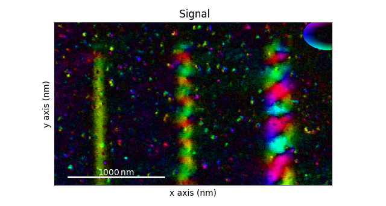
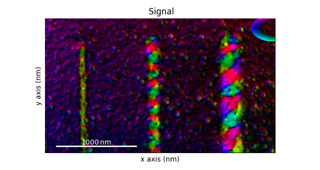
Total running time of the script: (1 minutes 52.125 seconds)